Nos encantaría poder decir que elaborar vino es fácil. En cierto modo lo es, pero hay que disponer de mucho espacio, material muy específico y muy buena uva.
Aqui veran el paso a paso en la elaboracion, de lo que para nosotros es, el mejor vino

CUIDADO
Para elaborar un buen vino necesitamos buenas uvas. Estas provienen de un viñedo con un suelo adecuado, con exposición correcta al sol. El viñedo debe estar en el lugar adecuado de latitud y altitud, y todas estas condiciones estar adaptadas al tipo de uva que haya plantada.
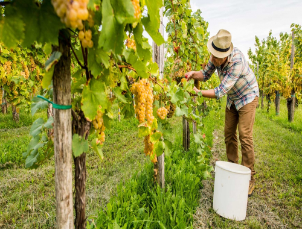
VENDIMIA
La vendimia es un momento estresante en el viñedo. El viticultor debe decidir cuál es el mejor momento para vendimiar. Si se tarda mucho en vendimiar las uvas pueden tener demasiado contenido de azucar (que se transforma en alcóhol) Es bueno que se espere al momento óptimo de azucar pero puede acarrear un riesgo de heladas en el viñedo... ¡y perder toda la cosecha!.
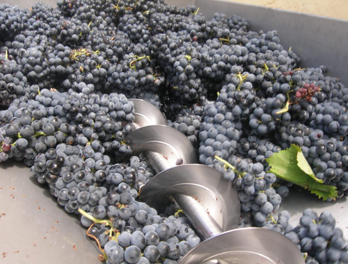
DESPALILLADO
Se procede al despalillado. En esta tarea los granos de uva se separan de raspones o escobajos. El despalillado total se realiza cuando se busca elaborar vinos suaves.
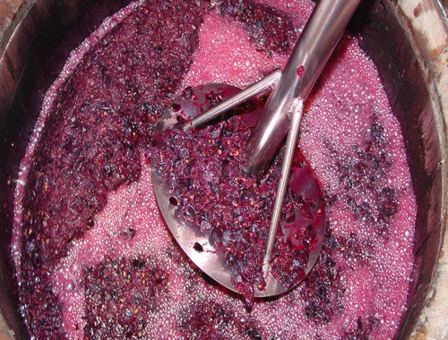
ESTRUJADO
El estrujado es diferente al prensado y no se debe confundir. Con el estrujado se busca extraer mosto que facilite la siembre de levaduras en toda la uva qeu se ha traído a la bodega. Al estrujarse el vino, las uvas se rompen y sueltan jugo. Esto facilita el proceso de fermentación.
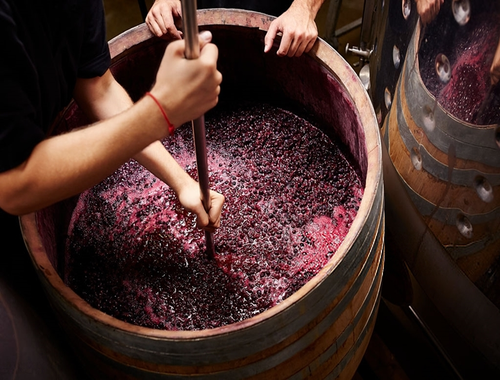
MACERACION
En el caso de los vinos tintos la fermentación se produce mientras están presentes partes sólidas. Serán estas partes sólidas que se han conservado, en especial los hollejos, los que aportan los taninos, pigmentos naturales que dan el color a los vinos tintos.
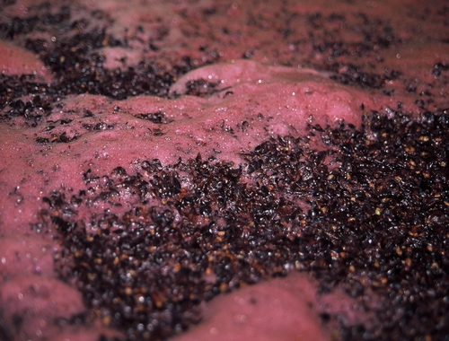
FERMENTACION
Durante la fermentación de vinos tintos se debe realizar lo que se denominan remontados. Remontar el vino es un proceso por el que el líquido que se encuentra en el fondo de los depósitos se sube para que tome contacto con las partes sólidas, que flotan en la parte alta del depósito formando lo que se denomina el sombrero. Con este proceso se asegura la extracción correcta de color durante todo el proceso.
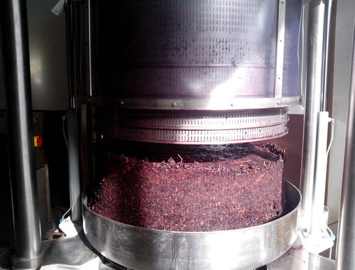
PRENSA
Antiguamente se usaban prensas de madera: son ese tipo de prensa que aún se conservan en Museos de vino o en algunas casas rurales o bodegas que las exponen con orgullo de su pasado. Estas prensas han sido sustituidas por prensas mucho más eficientes, que prensan en posición horizontal, o también por las llamadas prensas neumáticas, con las que las uvas se prensan a partir de la presión que realizan sacos neumáticos.
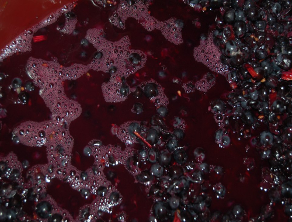
FERMENTACION
En ocasiones no es conocido que el vino debe "sufir" dos fermentaciones. A la alcóholica, que es la más conocida, sigue la fermentación maloláctica, por la que el ácido málico, más “ácido” se convierte en ácido láctico, proceso por el que se reduce la acidez del vino y se refinan los sabores.
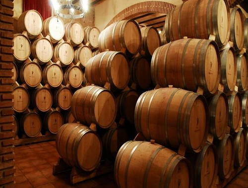
CRIANZA
La crianza es el paso en el que los vinos se introducen en barricas de roble. Este proceso se denomina también crianza oxidativa, ya que el vino se oxida durante el tiempo que pasa en las barricas por la entrada de muy pequeñas cantidades de oxígeno através de los poros de la madera. Esta aportación de oxígeno se combina con la aportación de la propia madera. La madera tiene taninos y estos aportan complejidad, sabores y notas de sabor que luego se hacen notorios en la cata.
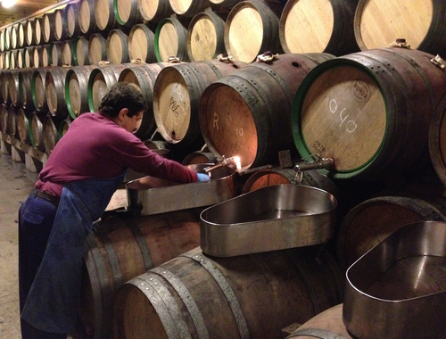
TRASIEGO
El proceso de la trasiega, que forma parte del método bordelés de elaboración, implica mover el vino de unas barricas a otras. Con ello el vino se aíre y las barricas se limipian.
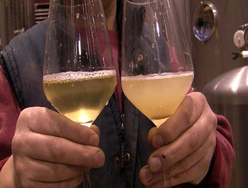
CLARIFICACION
La clarificación implica limpiar el vino para que no esté turbio, pero también para retirar aquellas particular no deseadas. Una clarificación excesiva, con métodos muy agresivos, puede implicar que el vino quede muy limpio… tanto que se retiren del mismo elementos que le desprotegen (taninos) o que le quitan las propiedades de sabor que se habían buscado. Los procesos tradicionales de clarificación se realizaban con claras de huevo, que al bajar se llevaban con sí todos los sedimentos no deseados.
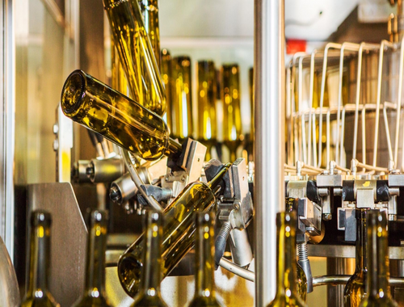
EMBOTELLADO
Tras la clarificación y con un vino ya estabilizado, el mismo se introduce en las botellas, donde seguirá evolucionando antes de salir al mercado. Hay muchos tipos de botellas, el tamaño más común es de un volumen de 75cl, y las formas para este tamaño son muy distintas, si bien la más habitual es la llamada bordelesa. Una vez terminado el proceso de elaboración el vino, queda listo para su consumo. ¡Salud!